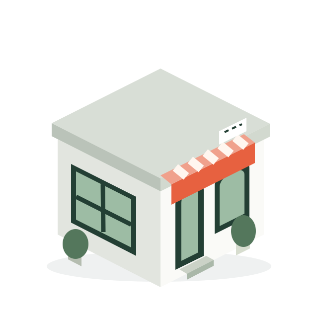

QUESTION↗
“A good Korean lunch
near Mangwon?”
YOUR STORE. CONNECTED.
ChatGPT·Gemini 추천 현황을 확인하고,
Google·카카오의 가게 정보를 고칩니다.

“A good Korean lunch
near Mangwon?”
AI가 우리 가게를 추천한 답변의 비율입니다.
성공한 답변 30개 중 6개 추천
사장님이 승인한 정비안 예시
실제 평균 상승 실적이 아닌 가상 수치
하나의 가게를, 여러 정보로.
스크롤하면 가게를 둘러싼 정보를 하나씩 살펴봅니다.
01 / 추천 현황 진단
관광객의 질문을 AI에 여러 번 묻습니다.
추천 등장률과 참고 출처를 확인하세요.
02 / 가게 정보 정비
사장님이 승인한 정보를
Google·카카오에 직접 반영합니다.
03 / 같은 조건으로 재측정
2주 뒤 같은 질문으로 다시 측정합니다.
AI 추천이나 상승률을 보장하지 않습니다.
바꾸는 건 정보. 확인하는 건 결과.
가게 이름과 지도 링크로 시작합니다.
첫 진단 결과를 보고, 정비 여부를 결정하세요.